교통기사 (2021-09-12 기출문제)
1과목: 교통계획
1. 통행수요를 예측하기 위한 비집계모형(disaggregate model)의 장점이 아닌 것은?
- 존 단위로 집계된 가구면접 O-D 자료를 이용하여 평균값을 예측하는데 유용하다.
- 집계모형에서 다루기 어려운 비선형관계를 나타낼 수 있다.
- 효율적으로 점검하고 수정할 수 있다.
- 개인 통행행태 자료를 더욱 신속하게 평가하고 분석할 수 있다.
(정답률: 47%)
2. 다음 중 교통투자사업의 수익성이 있다고 판단할 수 있는 내부수익률(IRR)의 조건은?
- 초기연도 수익률 ＜ 10%
- 초기연도 수익률 ＞ 10%
- 사용된 할인률(r) ＜ IRR
- 사용된 할인률(r) ＞ IRR
(정답률: 69%)

3. 수요곡선이 통행비중 증가에 따라 직선으로 감소하는 어떤 교통시설에 대한 개선 사업이 시행되었다. 개선 이전의 통행비용을 C1, 개선후의 통행비용을 C2, 개선 이전의 통행량을 Q1, 개선 후의 통행량을 Q2라고 할 때, 시설 개선으로 발생된 소비자잉여 측면의 편익은?
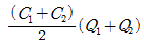
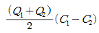
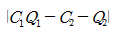
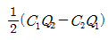
(정답률: 58%)
4. 지하철 요금이 1,200원일 때 승객수요는 8,000명이다. 수요탄력성이 –1.5일 때, 지하철 요금이 1,300원으로 인상되는 경우의 수요는 얼마인가?
- 4,500명
- 5,500명
- 6,000명
- 7,000명
(정답률: 45%)
5. 교통수요 추정방법 중 직접수요추정 모형(Direct demand model)에 해당하지 않는 것은?
- Wilson 모형
- McLynn 모형
- Kraft-SARC 모형
- Baumol-Quandt 모형
(정답률: 46%)
6. 기존에 버스전용차로로 운영하는 구간을 버스를 포함하는 다인승 차로(HOV lane)로 전환 시 나타날 수 있는 변화가 아닌 것은?
- 기존 버스노선의 승객 증가
- 기존 버스노선 운행 효율성 감소
- 다인승 차로 주변 도로 정체 완화
- 다인승 차량 승객의 통행시간 감소
(정답률: 62%)
7. 지능형 교통체계(ITS)의 목적으로 적합하지 않은 것은?
- 교통 소통 향상
- 교통 정보 제공
- 교통 안전 증진
- 도시 개발 촉진
(정답률: 71%)
8. 통행배분(Trip Assignment)을 위하여 사용되는 자료로 가장 거리가 먼 것은?
- 도로 구간별 건설비
- 도로 구간별 통행시간
- 도로 구간별 도로용량
- 기ㆍ종점 통행량
(정답률: 68%)
9. 폐쇄선 설정 시 고려할 사항으로 옳지 않은 것은?
- 폐쇄선을 가급적 행정구역 경계선과 일치시킨다.
- 주변에 동이 위치하면 폐쇄선 내에 포함하도록 한다.
- 폐쇄선을 횡당하는 도로나 철도가 가급적 최소가 되게 한다.
- 도시 주변에 인접한 위성도시나 장래 도시화 지역은 가급적 폐쇄선 내에 포함시키지 않는다.
(정답률: 67%)
10. 도로의 규모별 구분 중 광로 3류의 최소 폭원기준으로 옳은 것은?
- 25m이상
- 30m이상
- 40m이상
- 50m이상
(정답률: 64%)
11. 아래의 정의에 해당하는 것은?
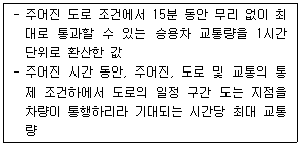
- 도로 용량
- 1시간 환산 교통량
- 승용차 환산 교통량
- 최대 서비스 교통량
(정답률: 44%)
12. 총 300부의 설문지를 배포하여 주소불명으로 5분가 되돌아 왔으며 그 외 응답자수는 286부가 회수되었고, 여기서 분석에 사용된 응답자는 147부였다면 유효응답률은?
- 약 49.0%
- 약 51.4%
- 약 70.0%
- 약 95.3%
(정답률: 60%)
13. 개인 통행실태조사의 원칙으로 옳지 않은 것은?
- 조사대상은 조사시점 현재 대한민국에 상주하는 만 5세 이상의 내ㆍ외국인으로 한다.
- 조사방법은 조사원이 직접 가구를 방문하여 조사하는 가구방문조사를 원칙으로 한다.
- 조사를 통해 회수된 설문지 수량이 유효표본수에 미치지 못하거나, 지역적으로 편중되어 있을 경우에는 보완조사를 실시하여야 한다.
- 표본수가 결정되면 응모추출법으로 표본을 추출한다.
(정답률: 54%)
14. 아래 [상황]에서 직장인 B가 하루 동안 발생시킨 목적 통행 수는?
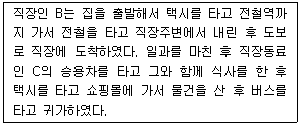
- 3
- 4
- 5
- 6
(정답률: 59%)
15. 교통수요 관리방안 중 차량수요를 감소시키기 위한 방법으로 가장 거리가 먼 것은?
- 재택근무
- 램프미터링
- 도심 통행료 징수
- 대중교통이용의 편리화
(정답률: 77%)
16. 도로의 기능을 크게 이동성과 접근성으로 분류할 때, 다음 중 이동성이 가장 높은 도로는?
- 집산도로
- 국지도로
- 주간선도로
- 보조간선도로
(정답률: 72%)
17. 평균운행속도 30km/h로, 편도 20km의 노선을 운행하는 버스의 최대 수송 인원이 60명이다. 배차간격이 5분일 때 필요한 차량 규모는?
- 8대
- 16대
- 20대
- 24대
(정답률: 59%)
18. 어떤 교통사업에 대한 편익과 비용이 아래와 같을 때, 이 사업의 순현재가치(NPV)는 약 얼마인가? (단, 단위는 백만원, 할인율은 연 5%이다.)
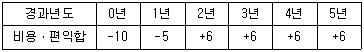
- 2,140,000원
- 3,410,000원
- 4,750,000원
- 5,550,000원
(정답률: 46%)
19. 로짓모형을 이용하여 각 존 별 교통수단부담율을 추정할 때 사용할 설명변수로 적합하지 않는 것은?
- 통행시간
- 통행비용
- 승용차보유대수
- 차외 통행시간(접근시간 등)
(정답률: 40%)
20. 주차 발생원단위법에 대한 설명으로 옳지 않은 것은?
- 적용변수가 간단하며 개별 건물의 주차 수요 예측에 적합하다.
- 변수들의 시간적ㆍ공간적 이전성이 높아 분석의 신뢰성이 높다.
- 교통패턴이 크게 변하지 않는 상태에서의 단기적 수요 예측에 이용한다.
- 추정식에서는 피크 시 건물 연면적 1000m2당 주차발생량을 이용한다.
(정답률: 50%)
2과목: 교통공학
21. 교통감응신호에 대한 설명으로 옳은 것은?
- 교통량의 변화와 상관없이 규칙적인 신호 주기가 반복된다.
- 연동화하기 어려운 교차로에는 사용할 수 없다.
- 정주기신호기에 비해 구조가 간단하고 설치비용이 저렴하다.
- 교통량의 시간별 변동이 클 경우 지체의 최소화가 가능하다.
(정답률: 60%)
22. 보호좌회전 통제 방식을 선행 좌회전과 후행좌회전 방식으로 구분할 때, 다음 중 후행 좌회전 통제 방식의 장점으로 옳은 것은?
- 운전자의 반응이 빠르다.
- 대향직진과 좌회전의 상충이 감소한다.
- 비보호좌회전에 비해 전용 좌회전차로가 없는 좁은 접근로의 용량이 증대된다.
- 연동신호에서 직진 차량군의 후미 부분만을 차단할 수 있다.
(정답률: 36%)
23. 도로의 한 지점에서 관측한 개별 차량 4대의 순간속도가 아래와 같을 때, 공간평균속도는 얼마인가?
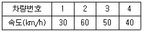
- 5.9km/h
- 42.1km/h
- 67.5km/h
- 135.0km/h
(정답률: 61%)
24. 아래의 교통량 밀도 그래프에서 서비스 수준 E의 상태를 나타내는 점은?
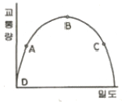
- A
- B
- C
- D
(정답률: 52%)
25. 양방향 2차로인 장대터널의 한 쪽 방향에서 차량들이 50km/h의 속도로 주행 중이며, 밀도는 25대/km이다. 이 때 승용차 한 대가 고장 나서 10km/h로 주행을 시작했고 이 상황과 관련한 교통량 밀도가 아래와 같을 때, 해당 교통류의 특성에 대한 설명으로 가장 거리가 먼 것은?
- 충격파는 직선A의 기울기이다.
- 원점과 P점을 잇는 가상선의 기울기는 50km/h일 것이다.
- 터널 내 CCTV로 관측하니 고장난 승용차로 인하여 교통류가 일렬로 줄지어 10km/h로 가는 것이 관찰되었다.
- 터널을 나온 후, 고장난 승용차가 길어깨로 빠져나가자마자 선두 교통류들은 속도 50km/h, 밀도 25대/km로 복귀하였다.
(정답률: 46%)
26. 속도누적분포에서 일반적으로 교통류 내의 합리적인 속도의 최대값을 나타내어 현장의 도로조건에 적합한 교통운영 계획을 세우는 데 기준이 되는 속도는?
- 100% 속도
- 85% 속도
- 50% 속도
- 25% 속도
(정답률: 68%)
27. 확률분포를 계수분포와 간격 분포로 구분할 때 계수분포에 해당하지 않는 것은?
- 이항분포
- 포아송분포
- 초기하분포
- 음지수분포
(정답률: 43%)
28. 일방 통행제의 장점이 아닌 것은?
- 평균 통행속도 증가
- 통행거리 감소
- 용량 증대
- 안전성 향상
(정답률: 60%)
29. 차량 속도가 50km/h, 교차로 폭이 20m인 도로에서의 적정 황색 시간은? (단, 차량의 감속도: 4.5sec2, 차량길이: 5m, 운전자 반응시간: 1.5초)
- 약 4.84초
- 약 5.84초
- 약 8.⑤초
- 약 9.⑤초
(정답률: 41%)
30. 아래 그림과 같이 교차로의 각 방향별 교통통제를 하고자 할 때, 최소 신호 현시 수는 얼마인가? (단, 비보호 좌회전은 없는 것으로 한다.)(문제 오류로 그림이 없습니다. 정확한 내용을 아시는분께서는 자유게시판 또는 관리자 메일로 그림 전송 부탁 드립니다. 정답은 2번입니다.)
- 2현시
- 3현시
- 4현시
- 6현시
(정답률: 52%)
31. 지체를 최소로 하는 주기를 구하는 Webster 공식에 대한 설명으로 옳은 것은?
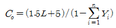
- L은 주기에서 총 유효녹색시간을 뺀 값이다.
- Yisms i현시 때 주 이동류의 교통용량/교통수요이다.
- 임계V/C비가 0.9이상이면 Co=L/(1-∑Yi)이다.
- 최적주기 부근인 0.75Co~1.5Co범위에서 지체는 크게 증가한다.
(정답률: 42%)
32. 차량의 회전저항(rolling resistance)에 관한 설명으로 옳지 않은 것은?
- 중량이 감소할수록 작다.
- 주행속도가 증가할수록 작다.
- 도로의 상태가 나쁠수록 크다.
- 회전저항이 증가혐 에너지 손실도 많아진다.
(정답률: 60%)
33. 연속교통류의 교통량, 속도, 밀도의 관계식에서 사용되는 속도의 종류는?
- 설계속도
- 지점속도
- 공간평균 속도
- 시간평균속도
(정답률: 53%)
34. 완전 감응 신호기(Full-actuated signal)의 기본 운영방식에 대한 설명이 틀린 것은?
- 모든 접근로에 검지기를 설치한다.
- 어느 도로에도 콜(Call)이 없으면 현재의 현시가 그대로 지속된다.
- 일반적으로 부도로 교통량이 주도로 교통량의 20%보다 적을 때 사용한다.
- 각 현시 끝에는 정해진 황색신호가 따른다.
(정답률: 45%)
35. 90km/h의 속도로 주행하는 차량의 최소 정지거리는 약 얼마인가? (단, 평지이며 타이어-노면의 마찰계수는 0.4, 운전자 반응시간은 1.5초이다.)
- 86.4m
- 98.2m
- 110.4m
- 117.2m
(정답률: 47%)
36. 다음 설명에 해당하는 교통류 모형은?
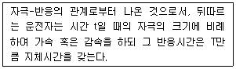
- 추종이론
- 충격파이론
- 가속소음이론
- 대기행렬이론
(정답률: 45%)
37. Greenshield 모형을 따르는 교통류의 특성에 대한 설명으로 옳은 것은?
- 임의의 교통류율에 대응하는 밀도는 하나만 존재한다.
- 임의의 교통류율에 대응하는 속도는 하나만 존재한다.
- 임의의 속도에 대응하는 밀도는 하나만 존재한다.
- 강제류에서 밀도가 높으면 교통류율은 커진다.
(정답률: 50%)
38. 도로의 한 지점에서 차량의 도착 분포가 평균 6대/분의 포아송 분포를 따른다고 할 때, 연속된 두 차량 간의 차두시간(Headway)이 20초보다 길 확률은?
- 약 0.034
- 약 0.104
- 약 0.135
- 약 0.865
(정답률: 39%)
39. 시공도(Time-space diagram) 작성에 필요하지 않은 것은?
- 차로수
- 연속 진행속도
- 교차로간의 거리
- 신호주기 및 현시 길이
(정답률: 40%)
40. 대기행렬이론에서 서비스를 기다리는 평균차량대수를 나타내는 평균대기행렬 길이 (E(m))산정식으로 옳은 것은? (단, λ는 평균도착률, μ는 평균서비스율이다.)
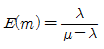
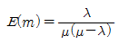
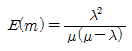
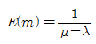
(정답률: 54%)
3과목: 교통시설
41. 아래의 내용에서 ㉠과 ㉡에 들어갈 말로 모두 옳은 것은?
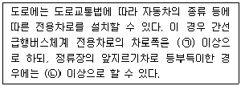
- ㉠ 3.50m, ㉡ 3.00m
- ㉠ 3.50m, ㉡ 3.25m
- ㉠ 3.25m, ㉡ 2.75m
- ㉠ 3.25m, ㉡ 3.00m
(정답률: 25%)
42. 도로구조물 중 교량의 설계 시 고려사항으로 가장 거리가 먼 것은?
- 내진성
- 설계하중
- 내풍안전성
- 설계책임자
(정답률: 65%)
43. 설계기준자동차의 종류별 제원 중 대형자동차의 길이는?
- 4.7m
- 6.0m
- 13.0m
- 16.7m
(정답률: 54%)
44. 아래의 설명에 해당하는 것은?
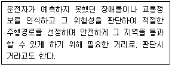
- 정지시거
- 앞지르기시거
- 피주시거
- 가각시거
(정답률: 57%)
45. 과속방지시설에 대한 설명이 틀린 것은?
- 저속 주행을 유도하기 위한 교통정온화기법에 해당한다.
- 차량의 통행 속도를 30km/h 이하로 제한할 필요가 있는 도로에 설치한다.
- 과속방지턱은 필요하다고 판단되는 장소에 최소로 설치한다.
- 높은 노면마찰계수로 인해 노면 포장과 다른 재료로 설치하는 것을 원칙으로 한다.
(정답률: 46%)
46. 도로의 선형설계 시 고려할 사항으로 틀린 것은?
- 평면선형과 종단선형은 가급적 별개로 설계한다.
- 운전자의 시각 및 심리적 측면에서 보아 양호한 것이어야 한다.
- 도로 환경 및 주위 경관과의 조화와 융합이 이루어져야 한다.
- 자동차의 주행역학적인 측면에서 안전하고 쾌적하며, 운행 경비 측면에서 경제성을 갖추도록 한다.
(정답률: 58%)
47. 고속국도에 버스정류장을 설치하는 경우, 정류장의 형태 및 설계속도에 따른 버스정류장의 최소 길이 기준이 바르게 연결된 것은?
- 직접식-120km/h-470m
- 평행식-120km/h-540m
- 직접식-100km/h-430m
- 평행식-100km/h-530m
(정답률: 42%)
48. 평면교차로 간의 최소 간격을 결정하는데 고려하여야 하는 사항이 아닌 것은?
- 교차로 통과속도
- 차로 변경에 필요한 길이
- 회전차로의 이에 따른 제약
- 다음 평면교차로에 대한 인지성 확보
(정답률: 27%)
49. 공동구에 관한 설명이 틀린 것은?
- 도시 미관에 도움이 된다.
- 원활한 교통 소통에 기여한다.
- 지하매설물 점용 공사에 따른 반복적인 노면 굴착을 최소화한다.
- 점용 단면에 대한 지하매설물의 수용용량을 축소시켜 주어, 지하매설물 정비를 위한 업무량 감소 및 효율화에 기여한다.
(정답률: 54%)
50. 도로의 계획 목표연도와 관련하여 아래의 ( )에 들어갈 말로 옳은 것은?
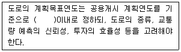
- 20년
- 15년
- 10년
- 5년
(정답률: 59%)
51. 비상주차대의 설치 기준으로 틀린 것은?
- 고속국도에서의 설치간격은 750m를 표준으로 한다.
- 도시고속국도, 주간선도의 우측 길어깨의 폭원이 3.0m미만일 경우에는 계획교통량이 적은 경우를 제외하고 비상주차대를 설치해야 한다.
- 비상주차대의 설치 간격 결정 시 고장차가 그대로의 상태로 주행할 수 있을 것인가 또는 인력으로 밀어 대피시킬 것인가를 감안하여 가능한 거리를 판단해야 한다.
- 표준형 비상주차대의 폭은 3.0m로 한다.
(정답률: 37%)
52. 도로에 설치하는 중앙분리대의 최소 폭 기준으로 옳은 것은? (단, 도시지역이고 설계속도 100km/h이상인 경우)
- 1.5m
- 2.0m
- 2.5m
- 3.0m
(정답률: 40%)
53. 도로의 시거에 관한 설명으로 옳은 것은?
- 시거는 차로 중심선을 따라 측정한 거리다.
- 앞지르기시거는 운전자의 눈높이 1.5m, 반대편차로의 차량 높이 1.8m를 기준으로 한다.
- 일반적으로 피주시거가 정지시거보다 짧다.
- 일반적으로 정지시거가 앞지르기시거보다 길다.
(정답률: 53%)
54. 횡단보도육교의 구조 기준이 틀린 것은?
- 난간의 높이는 1m이상, 폭은 0.1m이상이어야 한다.
- 계단인 경우 경사도는 30%(높이/밑변) 이하이어야 한다.
- 보도육교의 높이가 3.0m를 초과할 경우 계단참을 설치해야 한다.
- 단 높이와 단 너비의 표준은 각각 15cm, 30cm이다.
(정답률: 35%)
55. 어느 시외버스 터미널의 첨두시간의 버스 출발 횟수가 100대/시, 승차대당 발차능력이 20분 당 1대일 때 필요한 승차대 수는?
- 100개소
- 88개소
- 66개소
- 34개소
(정답률: 48%)
56. 회전교차로(Roundabout)에 관한 설명이 틀린 것은/
- 회전교차로의 진입차량이 회전차량 보다 통행우선권을 가진다.
- 일반적인 평면교차로에 비해 상충 횟수가 적다.
- 교차로 중앙에 원형 교통섬을 두고 평면교차로를 통과하는 자동차가 원형교통섬을 우회하여 교차로를 통과한다.
- 신호교차로에 비해 유지관리의 부담이 적다.
(정답률: 58%)
57. 아래 그림과 같이 +3%의 경사와 –3%경사인 두 지점 사이에 500m 길이의 종단곡선을 설치한 경우, 종단경사 변화량에 대한 종단곡선의 길이의 비는?
- 97.2m/%
- 83.3m/%
- 62.7m/%
- 50.4m/%
(정답률: 44%)
58. 도로의 기능별 구분에 상응하는 도로법에 따른 도로의 종류가 잘못 연결된 것은?
- 주간선도로-고속국도
- 보조간선도로-일반국도
- 집산도로-지방도
- 국지도로-시도
(정답률: 50%)
59. 입체교차로 시설 중 불완전 클로버형 입체교차로의 형식으로 옳은 것은?
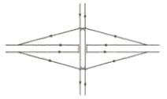
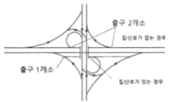
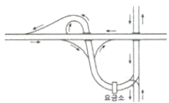
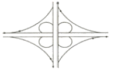
(정답률: 48%)
60. 아래 설명 중 ( )에 들어갈 내용으로 옳은 것은?
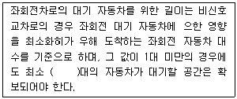
- 1
- 2
- 3
- 4
(정답률: 45%)
4과목: 도시계획개론
61. 도시 및 지역 경제의 분석 방법 중 지역 간 투입 산출법의 특징에 대한 설명이 아닌 것은?
- 최종 생산물의 외생적인 영향력을 예측하는데 이용할 수 있다.
- 가격이 일정하다고 가정하기 때문에 상대가격의 변화로 인한 대체효과를 반영할 수 없다.
- 분석 단위가 세분화되거나 산업이 기술변화에 민감하여도 투입계수의 안정성 문제는 발생하지 않는다.
- 투입계수표는 지역의 기반산업에 투입되는 중간재의 투입 정도가 적절한지의 여부를 판단할 수 있게 해 준다.
(정답률: 50%)
62. 다음 중 도시ㆍ군관리계획에 포함되지 않는 것은?
- 용도지역의 지정 또는 변경에 관한 계획
- 지구단위계획 구역의 지정 또는 변경에 관한 계획
- 도시개발사업이나 정비사업에 관한 계획
- 주택공급개발 및 촉진에 관한 계획
(정답률: 45%)
63. 토지이용계획의 수립 시 이용하는 정성적(定性的) 예측 변수로 가장 거리가 먼 것은?
- 산업입지의 형태
- 생활양식의 변화 추이
- 기술 및 사회 가치관의 변화
- 토지의 생산성 및 산업별 생산액
(정답률: 41%)
64. 토지이용계획에 있어서 샤핀이 주장한 공공의 이익 요인에 해당하지 않는 것은?
- 자유성
- 안전성
- 보건성
- 쾌적성
(정답률: 31%)
65. 도시개발사업 시행 방식 중 환지방식에 비해 수용 및 사용방식이 갖는 장점이 아닌 것은?
- 보상 과정에서 민원 발생이 적다.
- 기반시설의 확보가 용이하다.
- 공사기간의 단축 및 대규모 개발이 가능하다.
- 공공성을 확보하며 일괄 시행이 가능하다.
(정답률: 29%)
66. 도로의 규모별 구분 중 광로는 최소 폭이 몇 m 이상인 도로로 정의하는가?
- 40m
- 50m
- 60m
- 70m
(정답률: 52%)
67. 다음 중 도시를 구성하는 유기적 요소를 모두 옳게 나열한 것은?
- 시민, 활동, 토지 및 시설
- 주택, 밀도, 인구 및 동선
- 활동, 공간, 토지이용 및 교통
- 인구, 토지이용, 밀도
(정답률: 43%)
68. 우리나라의 국토 및 도시계획 관련 법률 중, 제정 순서가 빠른 법률부터 옳게 나열한 것은? (단, 현행 여부는 고려하지 않는다.)
- 주택건설촉진법-수도권정비계획법-도시개발법-택지개발촉진법
- 주택건설촉진법-택지개발촉진법-수도권정비계획법-도시개발법
- 택지개발촉진법-주택건설촉진법-수도권정비계획법-도시개발법
- 택지개발촉진법-주택건설촉진법-도시개발법-수도권정비계획법
(정답률: 48%)
69. 국토의 계획 및 이용에 관한 법령상 도시ㆍ군기본계획의 원칙적인 수립권자에 해당하는 자는?
- 중앙도시계획위원회장
- 특별시장ㆍ광역시장
- 국토교통부장관
- 지방의회
(정답률: 32%)
70. 몇 개의 대도시와 그 주변 지역의 도시들이서로 연담화하여 공간적으로 융합된 지역으로 고트만(J. Gottmann)에 의해 제시된 개념은?
- 거대도시(Megaloplis)
- 가상도시(Virtual city)
- 도시지역(Urban region)
- 위성도시(Satellite city)
(정답률: 45%)
71. 도시공간구조이론에서 제3차 산업과 관련된 입지 이론으로도 불리는 것은?
- 다핵이론
- 선형이론
- 동심원 이론
- 중심지 이론
(정답률: 35%)
72. 도시공원 및 녹지 등에 관한 법령상 기능에 따른 녹지의 세분에 해당하지 않는 것은?
- 경관녹지
- 완충녹지
- 연결녹지
- 보존녹지
(정답률: 35%)
73. 기능별 구분에 따른 도로의 배치간격기준으로 옳지 않은 것은?
- 주간선도로와 주간선도로 : 2천m 내외
- 주간선도로와 보조간선도로 : 500m 내외
- 보조간선도로와 집산도로 : 250m 내외
- 국지도로간 : 가구의 짧은 변 사이의 배치간격은 190m내지 150m내외, 가구의 긴 변 사이의 배치간격은 25m내지 60m 내외
(정답률: 52%)
74. 현재 도시의 인구가 50만 명이고, 매년 인구가 25,000명씩 증가할 때, 12년 후의 예상 인구는?
- 150만명
- 120만명
- 100만명
- 80만명
(정답률: 52%)
75. 격자형 도로망에 대한 설명으로 옳지 않은 것은?
- 도로 기능의 다양성이 결여된다.
- 지형이 평탄한 도시에 적합하다.
- 교통 흐름의 도시 집중이 강하다.
- 고대 및 중세 봉건도시에서 흔히 볼 수 있다.
(정답률: 45%)
76. 넬슨과 듀칸이 제시한 도시 성장관리(Grovith management) 정책의 목적이 아닌 것은?
- 경제적 효율성 제고
- 도시 성장률의 단일화
- 효율적인 도시 형태의 구축
- 무분별한 도시의 외연적 확산 방지
(정답률: 52%)
77. 교통로를 따라 형성되는 선형 도시(LinearCity)의 제안자는?
- C. Stein
- Abercrombie
- Soria Y Mata
- Raymond Unwin
(정답률: 34%)
78. 도시공원 및 녹지 등에 관한 법령의 정의에 따라 생활권 공원에 해당하지 않는 것은?
- 소공원
- 근린공원
- 묘지공원
- 어린이공원
(정답률: 46%)
79. 다음의 도시계획 이론 중 허드슨(Hudson)의 분류에 해당하지 않는 것은?
- 급진적 계획
- 옹호적 계획
- 점진적 계획
- 낭만주의적 계획
(정답률: 40%)
80. 건폐율이 65%, 용적률이 910%일 때 건물의 층수는? (단, 모든 층의 바닥 면적은 동일하다.)
- 14층
- 16층
- 18층
- 26층
(정답률: 43%)
5과목: 교통관계법규
81. 대도시권 광역교통 관리에 관한 특별법령상대도시권의 권역 구분 및 범위가 틀린 것은?
- 수도권: 서울특별시, 인천광역시, 경기도
- 부산ㆍ울산권: 부산광역시, 울산광역시
- 대구권: 대구광역시, 경상북도 경주시
- 광주권: 광주광역시, 전라남도 나주시
(정답률: 35%)
82. 도로법령상 접도구역(接道區域)을 지정할 때에는 소관 도로의 경계선에서 최대 몇 미터를 초과하지 아니하는 범위에서 지정하여야 하는가? (단, 고속국도 및 기타의 경우는 고려하지 않는다.)
- 5m
- 10m
- 20m
- 30m
(정답률: 20%)
83. 대중교통의 육성 및 이용촉진에 관한 법률상 아래의 정의에 해당하는 것은?
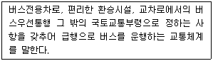
- 대중교통시설
- 간선급행버스체계
- 버스운행관리시스템
- 광역교통시설
(정답률: 50%)
84. 국가통합교통체계효율화법상 사람 또는 화물의 운송과 관련된 활동을 효과적으로 수행하기 위하여 서로 유기적으로 연계된 교통수단, 교통시설 및 교통운영과 이와 관련된 산업 및 제도를 나타내는 명칭은?
- 물류
- 교통체계
- 국가기간교통망
- 지능형교통체계
(정답률: 32%)
85. 도로법에 의한 도로의 종류가 아닌 것은?
- 고속국도
- 일반국도
- 유료도로
- 특별시도
(정답률: 52%)
86. 도로법령상 도로의 부속물에 해당하지 않는 것은?
- 주차장, 버스정류시설, 휴게시설
- 궤도용의 교량, 횡단도로, 가로수
- 시선유도표지, 중앙분리대, 과속방지시설
- 통행료 징수시설, 도로관제시설, 도로관리사업소
(정답률: 43%)
87. 대도시권 광역교통관리에 관한 특별법령상 ‘광역철도’표정속도의 최저 기준은? (단, 도시철도를 연장하는 광역철도는 제외)
- 30km/h이상
- 40km/h이상
- 50km/h이상
- 60km/h이상
(정답률: 28%)
88. 교통안전법상 교통안전에 관한 주요 정책과 국가교통안전기본계획 등을 심의하는 기관은?
- 국가교통안전정책심의회
- 중앙교통위원회
- 국가교통위원회
- 교통안전위원회
(정답률: 38%)
89. 도로교통법상 고속도로의 정의로 옳은 것은?
- 주행속도의 제한이 없는 도로
- 통행료를 지불해야 다닐 수 있는 도로
- 자동차의 고속 운행에만 사용하기 위하여 지정된 도로
- 자전거 및 개인형 이동장치가 횡단할 수 잇도록 구분한 도로
(정답률: 60%)
90. 주차장법령상 시설물의 부지 인근에 단독 또는 공동으로 부설주차장을 설치할 수 있는 부설주차장의 규모 기준은?
- 주차대수 50대의 규모 이하
- 주차대수 100대의 규모 이하
- 주차대수 200대의 규모 이하
- 주차대수 300대의 규모 이하
(정답률: 36%)
91. 주차장법령상 부설주차장의 설치의무를 면제받으려는 자가 시장ㆍ군수 또는 구청장에게 제출하여야 하는 주차장 설치의무 면제신청서의 기재사항이 아닌 것은?
- 신청인의 성명 및 주소
- 시설물의 위치ㆍ용도 및 규모
- 주차장 관리자의 성명 및 주소
- 설치하여야 할 부설주차장의 규모
(정답률: 52%)
92. 도로교통법상 도로를 횡단하는 보행자나 통행하는 차마의 안전을 위하여 안전표지나 이와 비슷한 인공구조물로 표시한 도로의 부분을 무엇이라 하는가?
- 안전지대
- 횡단보도
- 보행자전용도로
- 길가장자리 구역
(정답률: 43%)
93. 도시교통정비촉진법령에 따른 교통혼잡 특별관리구역과 교통혼잡 특별관리시설물의 지정기준으로 옳지 않은 것은? (단, “혼잡시간대”란 일정한 지역이 그 지역을 통과하거나 둘러싼 도로 중 1개 이상의 도로에서 시간대별 평균 통행속도가 시속 15킬로미터 미만인 상태를 뜻한다.)
- 교통혼잡 특별관리시설물 지정기준을 적용하는 경우 주차장을 공동으로 사용하는 2개 이상의 시설물은 하나의 시설물로 본다.
- 혼잡시간대가 토ㆍ일요일과 공휴일을 포함한 주 중 21회 이상 발생하는 경우 해당 지역을 교통혼잡 특별관리구역으로 지정할 수 있다.
- 시설물을 둘러싼 도로 중 1개 이상의 도로에서 혼잡시간대가 토ㆍ일요일과 공휴일을 포함한 주 중 가장 많이 발생하는 날을 기준으로 하루 3회 이상 발생할 경우 교통혼잡특별관리 시설물로 지정할 수 있다.
- 혼잡시간대가 가장 많이 발생하는 날의 혼잡시간대 중 1회 이상의 혼잡시간대에 해당도로를 통하여 해당 시설물로 진입하거나 진출하는 교통량이 그 도로 한쪽 방향 교통량의 5퍼센트 이상일 경우 교통혼잡 특별관리시설물로 지정할 수 있다.
(정답률: 30%)
94. 국가통합교통체계 효율화법상 국가교통조사와 관련한 아래 설명에서 ( )에 들어갈 내용으로 옳은 것은?
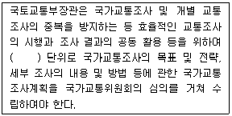
- 1년
- 3년
- 5년
- 10년
(정답률: 45%)
95. 도로교통법상 교차로 통행방법에 대한 설명이 옳지 않은 것은?
- 교통정리를 하고 있지 아니하는 교차로에 동시에 들어가려고 하는 차의 운전자는 우측도로의 차에 진로를 양보하여야 한다.
- 모든 차의 운전자는 교차로에서 우회전을 하려는 경우에는 미리 도로의 우측 가장자리를 서행하면서 우회전하여야 한다.
- 폭이 넓은 도로로부터 교차로에 들어가려고 하는 다른 차가 있을 때에는 그 차에 진로를 양보하지 않고 빠른 속도로 주행하여 해당 교차로를 빠져나가야 한다.
- 우회전이나 좌회전을 하기 위하여 손이나 방향지시기 또는 등화로써 신호를 하는 차가 있는 경우에 그 뒤차의 운전자는 신호를 한 앞차의 진행을 방해하여서는 아니 된다.
(정답률: 54%)
96. 국가통합교통체계 효율화법령상 복합환승센터가 소재하는 특별시ㆍ광역시ㆍ특별자치시ㆍ특별자치도 또는 시ㆍ군(광역시에 있는 군 제외)의 해당지방자치단체의 장은 복합환승센터의 건폐율, 용적률 및 높이 제한에 관하여 그 용도지역에서 적용되는 건페율, 용적률 및 높이 제한의 얼마를 초과하지 않는 범위에서 달리 정할 수 있는가?
- 100분의 150
- 100분의 170
- 100분의 190
- 100분의 200
(정답률: 49%)
97. 주차장법령상 부설주차장을 설치하는 자가 시설물의 건축 또는 설치에 관한 허가를 신청하거나 신고할 때 부설주차장 설치계획서에 첨부하여야 할 서류 또는 도면에 해당하지 않는 것은? (단, 시설물의 부지 인근에 부설주차장을 설치하는 경우)
- 공사설계도서
- 인근 주민 5명 이상의 서명이 적힌 동의서
- 토지의 지번ㆍ지목 및 면적이 적힌 토지조서
- 시설물의 부지와 주차장 설치 부지를 포함지역의 토지이용 상황을 판단할 수 있는 축적 1/1200 이상의 지형도
(정답률: 47%)
98. 도로교통법령상 신호등의 등화의 밝기는 낮에 몇 m 앞쪽에서 식별할 수 있는 성능을 가진 것이어야 하는가?
- 150m
- 100m
- 50m
- 30m
(정답률: 24%)
99. 도시교통정비촉진법상 국토교통부장관이 도시교통정비지역으로 지정ㆍ고시할 수 있는 기준으로 옳은 것은? (단, 도농복합형태의 시가 아닌 경우)
- 인구 5만명 이상의 도시
- 인구 10만명 이상의 도시
- 인구 15만명 이상의 도시
- 인구 20만명 이상의 도시
(정답률: 48%)
100. 도시교통정비촉진법령상 교통유발부담금의 부과는 해당 시설물의 각 층 바닥면적을 합한 면적이 최소 얼마 이상인 것을 대상으로 하는가? (단, 주택법의 규정에 따른 주택단지에 위치한 시설물로서 도로변에 위치하지 아니한 시설물인 경우는 고려하지 않는다.)
- 1,000m2이상
- 1,500m2이상
- 2,000m2이상
- 3,000m2이상
(정답률: 39%)
6과목: 교통안전
101. 교차로에서 좌회전 교통량이 많아 발생하는 좌회전 충돌사고를 방지하기 위한 대책으로 가장 거리가 먼 것은?
- 교차로의 도류화
- 회전 유도차선 표시
- 좌회전 신호 현시 개선
- 교차로 내부 공간 확대
(정답률: 50%)
102. 보행자의 안전한 차도부 횡단을 위해 보행이 빈번한 지점에 설치하는 시설물인 보행 횡단보도 중2단형 횡단보도로서 차도 중앙에 교통섬이 있는 형태로 넓은 도로에서 교통처리의 효율 제고를 위해 적용되는 횡단보도는?
- 스크램블(Scrambled) 횡단보도
- 스테거드(Staggered) 횡단보도
- 인공지능(AI) 횡단보도
- 투칸(Toucan) 횡단보도
(정답률: 45%)
103. 교통안전법령에 따라 교통시설안전진단을 받아야 하는 대상에 해당하지 않는 것은?
- 도로
- 철도
- 공항
- 항만
(정답률: 36%)
104. 교통사고 조사 시 차량의 타이어가 구르면서 나타나는 자국인 스커프 마크(Scuff mark)에 해당하지 않는 것은?
- Yaw mark
- Skid mark
- Flat tire mark
- Acceleration scuff mark
(정답률: 28%)
1⑤. 교통안전도 평가 시, 어떤 특정지역의 교통사고 현황을 그 특정지점과 참조지점의 교통사고기록과 결합하여 교통사고의 불확실성으로 인한 교통안전도 평가의 왜곡현상을 극복하고자 사용하는 이론은?
- Empirical Bayes(EB)
- Safety Performance Function(SPF)
- Crash Modification Factor(CMF)
- Continuos Risk Profile(CRP)
(정답률: 15%)
106. 충돌도(Collision diagram)에 관한 설명으로 틀린 것은?
- 요구되는 예방책을 결정하기 위한 사고의 패턴을 파악하기 위하여 사용한다.
- 사고다발지점의 물리적 현황을 나타낸다.
- 화살표와 기호로 사고에 관련된 차량이나 보행자의 경로, 사고의 유형 및 정도를 도식적으로 나타낸다.
- 보통은 축척을 무시하고 작도된다.
(정답률: 34%)
107. 교차로에서 5년간 발생한 교통사고가 10건, 일평균 교통량이 2,000대일 경우 차량 1백만대당 사고율은?
- 2.14건
- 2.74건
- 3.12건
- 3.90건
(정답률: 50%)
108. 교차로에서 황색신호가 켜지는 순간에 그대로진행하더라도 교차로 통과가 가능하고, 임계감속도로 감속하더라도 정지선에 어려움 없이 정지할 수 있는 구간의 명칭과 해당 구간이 발생하는 원인이 모두 옳은 것은?
- Dilemma Zone, 황색신호시간 ＞ 적정황색신호시간
- Safety Zone, 황색신호시간 ＜ 적정황색신호시간
- Option Zone, 황색신호시간 ＞ 적정황색신호시간
- Clear Zone, 황색신호시간 ＜ 적정황색신호시간
(정답률: 47%)
109. 내리막길에서 급제동을 자주 계속하면 브레이크 슈와 드럼 및 휠실린더가 열을 받아 브레이크 오일이 끓어서 브레이크 파이프 내에 기포가 발생하여 제동이 잘 안 되는 현상을 무엇이라 하는가?
- 페이드
- 하이드로 플래닝
- 베이퍼 록
- 슬라이딩
(정답률: 40%)
110. 다음 방호울타리의 종류 중 충격에너지를 흡수하는 것보다는 충격 시 차량의 도로 밖 이탈을 억제하여 차량을 복귀시키는 것이 우선적으로 필요한 곳에 설치하면 가장 적합한 것은?
- 가드레일
- 박스형보
- 가드파이프
- 강성방호울타리
(정답률: 32%)
111. 제한된 시기에 의해 발생하는 비신호 교차로에서의 직각 충돌에 대한 일반적 예방책으로 가장 거리가 먼 것은?
- 가각주차제한
- 가로조명 개선
- 횡단보도설치
- 시야장애물 제거
(정답률: 35%)
112. 교통사고의 노출도(Exposure rate)를 설명하는 변수로 일반적으로 활용되지 않는 것은?
- 교통량
- 신호 현시 수
- 도로연장
- 인구
(정답률: 28%)
113. 원호형 과속방지턱의 제원 기준이 옳은 것은?
- 길이 3.6m, 높이 10cm
- 길이 4.0m, 높이 10cm
- 길이 3.6m, 높이 6cm
- 길이 4.0m, 높이 6cm
(정답률: 44%)
114. 어느 지역의 교통사고 다발 지점을 개선한 경우 해당 개선 지점의 교통사고는 개선전에 비해 감소하지만, 주변의 다른 지점에서 사고가 발생하는 경우가 있다. 이는 다음 중 어떤 요인이 가장 큰 영향을 미치기 때문인가?
- 사고 이동(Accident Migration)
- 평균회귀효과(Regression-to-Mean Effect)
- 위험 보정(Risk Compensation)
- 위험 회피(Threaten Avoidance)
(정답률: 39%)
115. 교통사고 예방을 위한 3E가 아닌 것은?
- Education(교육)
- Engineering(공학)
- Enforcement(시행)
- Emergency(구호)
(정답률: 48%)
116. 도로를 주행하다가 갑자기 터널에 들어가면 눈이 적응하기 위해 약간의 시간이 소요된다. 이렇게 밝은 곳에서 어두운 곳으로 이동할 때 일어나는 현상을 무엇이라 하는가?
- 암순응
- 명순응
- 인지 한계
- 착시현상
(정답률: 52%)
117. 다음 중 교통사고의 재현에 필요한 자료가 아닌 것은?
- 노면 상태
- 활주흔(Skid mark)
- 사고차량의 검사 유무
- 사고차량의 최종 위치
(정답률: 57%)
118. 일반적인 교차로의 사고방지대책이 아닌 것은?
- 좌회전 전용 차로를 설치한다.
- 횡단보도와 정지선 간의 간격을 좁혀서 차량의 교차로 통행시간을 줄인다.
- 입체분리시설(육교 및 지하도)을 설치한다.
- 필요한 지점에 차량 및 보행자 신호기를 설치한다.
(정답률: 57%)
119. 어느 지점의 연간 교통사고 건수는 20건, 일교통량은 1000대이다. 이 지점에 교통안전시설을 설치하는 경우, 사고감소율을 20%, 장래의 일교통량을 1500대로 예상할 때 예측되는 사고감소 건수는?
- 1건
- 3건
- 6건
- 10건
(정답률: 43%)
120. 주행 중이던 차량이 급정거하면서 스키드마크가 15m길이로 나타난 다음 3m를 지나서 다시 20m가 계속되었을 때, 이 차량의 제동 전 초기속도는 약 얼마인가? (단, 타이어와 노면의 마찰계수는 0.7이고 평탄한 구간이다.)
- 75.5km/h
- 78.9km/h
- 81.5km/h
- 84.9km/h
(정답률: 37%)